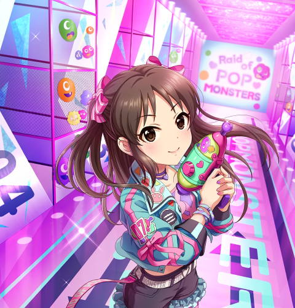
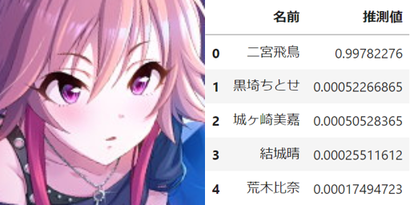
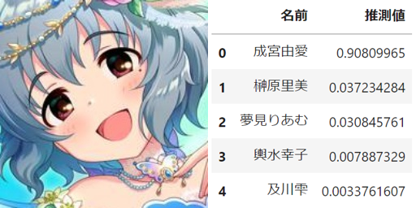
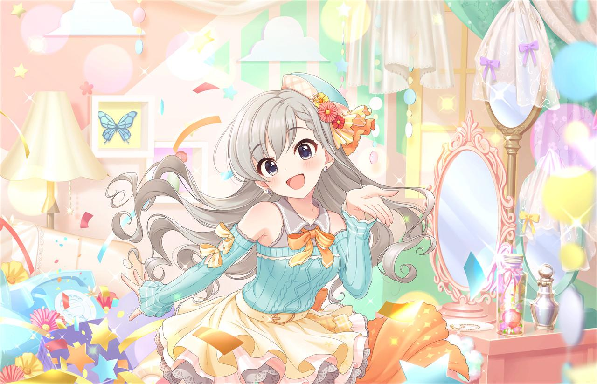
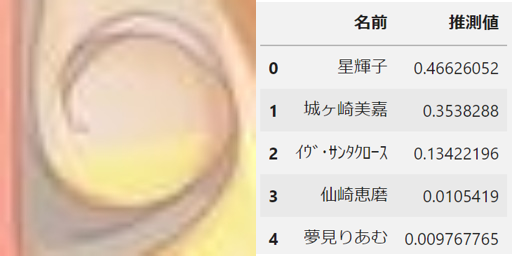

学生の本分は学業です。
浮ついて貴重な時間を無駄にする人は、
学費と人生を浪費しています。
自己紹介
自己紹介
| 名前 | こーちゃん |
| 所属 | 数理計算科学系 |
| 入学年度 | 2018年 |
| 学年 | 学部4年 |
突然ですが
突然ですが
アイドルの顔面って素敵ですよね
そこで
Let the Machine Eat Idol Faces
Let the Machine Eat Idol Faces
アイドルの顔面を
機械に食わせよう
手法
手法
- 学習用の画像を用意する
- OpenCV に搭載されている顔検出用モデル lbpcascades を二次元画像用に調整したモデル lbpcascade_animeface を用いて顔部分を切り抜く
- Keras に搭載されているモデル Inception-V3 をアイドルの顔の識別用に転移学習する
つまり
つまり
アイドルの顔を餌に
つまり
アイドルの顔を餌に
機械学習
顔面の抽出例 その1
[ｶﾞｰﾙ･ｿｰ･ｽｲｰﾄ]橘ありす+
顔面の抽出例 その1
[ｶﾞｰﾙ･ｿｰ･ｽｲｰﾄ]橘ありす+
かわいいね
顔面の抽出例 その2
[ちいさな手のひら]佐城雪美+
顔面の抽出例 その2
[ちいさな手のひら]佐城雪美+
かわいいね
閑話休題
データの下処理
データの下処理
datagen = image.ImageDataGenerator(
rescale=1./255,
validation_split=0.1,
horizontal_flip=True,
width_shift_range=0.2,
height_shift_range=0.2,
shear_range=0.2,
fill_mode='nearest'
)
データの下処理
train_generator = datagen.flow_from_directory(
'data/train/face',
target_size=(256, 256),
class_mode='categorical',
batch_size=batch_size,
subset='training',
seed=seed,
)
val_generator = datagen.flow_from_directory(
'data/train/face',
target_size=(256, 256),
class_mode='categorical',
batch_size=batch_size,
subset='validation',
seed=seed,
)
モデルの準備
モデルの準備
from tensorflow.keras.applications.inception_v3 import InceptionV3
from tensorflow.keras.models import Model
from tensorflow.keras.layers import Dense, GlobalAveragePooling2D
base_model = InceptionV3(weights='imagenet',
include_top=False,
input_shape=(256, 256, 3))
# 特徴量から推定結果を求める全結合層を再定義する
x = base_model.output
x = GlobalAveragePooling2D()(x)
x = Dense(1024, activation='relu')(x)
predictions = Dense(len(set(train_generator.labels)), activation='softmax')(x)
model = Model(inputs=base_model.input, outputs=predictions)
モデルの準備
from tensorflow.keras.optimizers import SGD
# 全結合層以外の重みを固定
for layer in base_model.layers:
layer.trainable = False
model.compile(optimizer=SGD(learning_rate=0.001, momentum=0.9),
loss='categorical_crossentropy',
metrics=['accuracy'])
model.fit(train_generator,
epochs=10,
verbose=1,
validation_data=val_generator)
モデルの準備
現在の精度 : 24%
学習
学習
for layer in model.layers[:249]: layer.trainable = False
for layer in model.layers[249:]: layer.trainable = True
model.compile(optimizer=SGD(learning_rate=0.001, momentum=0.9),
loss='categorical_crossentropy',
metrics=['accuracy'])
model.fit(train_generator,
epochs=70,
verbose=1,
validation_data=val_generator,
callbacks=[checkpoint])
2時間後
2時間後
精度 : 90%
結果1: 検証用データ
結果1: 検証用データ
結果1: 検証用データ
結果1: 検証用データ
結果1: 検証用データ
いいですね
次
結果2: 外部のデータ
[ありすの物語]橘ありす
[ありすの物語]橘ありす
[ありすの物語]橘ありす
映り込んだしゅがは
映り込んだしゅがは
いいですね
次
[アドマイヤ・ブライド]橘ありす＋
小学生に
花嫁衣装を
着せるな
[アドマイヤ・ブライド]橘ありす＋
結婚しました
結婚しました
ご成長
ありがとうございました
結婚しました
ご成長
ありがとうございました
[アドマイヤ・ブライド]橘ありす＋
[アドマイヤ・ブライド]橘ありす＋
[アドマイヤ・ブライド]橘ありす＋
いいですね
次
[キトゥンズガーデン]佐城雪美
小学生に
えっちな
衣装を
着せるな
[キトゥンズガーデン]佐城雪美
これ絶対
見えてる
よね
[キトゥンズガーデン]佐城雪美
[キトゥンズガーデン]佐城雪美
[キトゥンズガーデン]佐城雪美
いいですね
映り込んだ千枝ちゃん
映り込んだ千枝ちゃん
映り込んだ千枝ちゃん
いいですね
映り込んだ由愛ちゃん
映り込んだ由愛ちゃん
映り込んだ由愛ちゃん
榊原里美......?
映り込んだ由愛ちゃん
榊原里美......?
[ほわあまプリンセス]榊原里美＋
[ほわあまプリンセス]榊原里美＋
[ほわあまプリンセス]榊原里美＋
[ほわあまプリンセス]榊原里美＋
なるほどね
[ほわあまプリンセス]榊原里美＋
[色とりどりのゆめ]成宮由愛＋
[色とりどりのゆめ]成宮由愛＋
[色とりどりのゆめ]成宮由愛＋
似ているらしい
他の似ている
アイドルは?
[エレガンス・プラス]十時愛梨＋
VS
[笑顔のレセプション]高森藍子

なるほどね
例の双子、行きますか
[オンタイム・ハーモニー]久川颯＋
VS
[オフタイム・ナギルーム]久川凪＋
わかったこと
わかったこと
- 成宮由愛ちゃんと榊原里美ちゃんは似ている
- 高森藍子さんと十時愛梨さんは案の定似ている
- 久川姉妹は意外と見分けがつく
おまけ
[オフタイム・ナギルーム]久川凪
顔が3個検出されました
残りの2つ

ありがとうございました